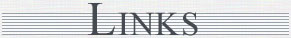

On The Internet I tend to read widely and sometimes indiscriminately. These are a few of the regular sites I visit for a challenging read. Keep watching this space as more will be added from time to time. Remember to hit your “Refresh” or “Reload” button to make sure you have the latest update! Each link opens in a new window for you so that you won’t lose your place here. Simply close the window to return to this list — Enjoy!
- Melbourne PC Users Group — the place where I hang out
- Digital Tapestries — the lovely people who created this site for me!
- Send Virtual Chocolate — send someone you love a delicious treat
- Crikey
- Private Eye Magazine
- The Christian Science Monitor
- Utne Reader
- Michael Moore Online
- Byron Bay Echo — Nation Review colleague Mungo MacCallum has now moved to Byron Bay and I enjoy reading his writings on politics in his local paper.
- DEBKAfile
- ABC Online — Australian Broadcasting Corporation
- The Internet Movie Database — a must for film buffs or even those only mildly interested
- Stan Johnstone’s Home Page — a wealth of links for all tastes and interests
Content © 2012 Robin Howells — All rights reserved
Original design, layout and web authoring by